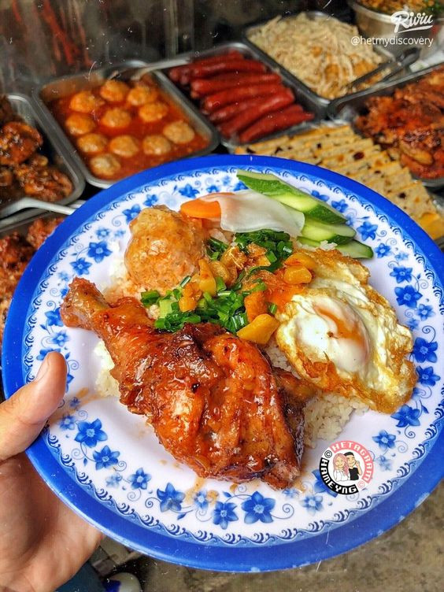
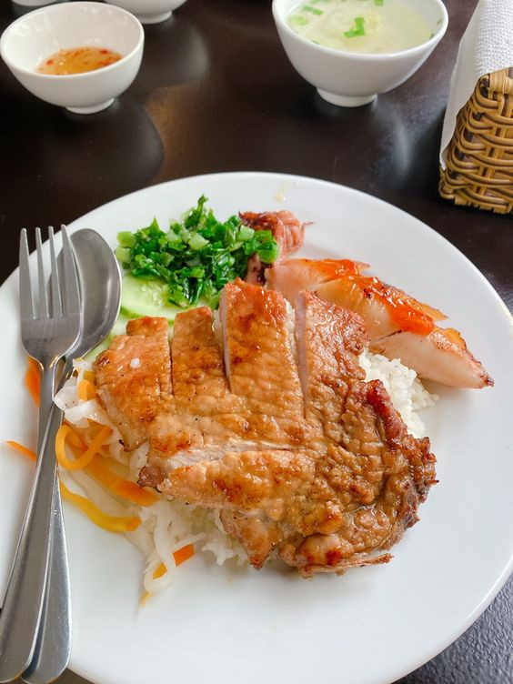
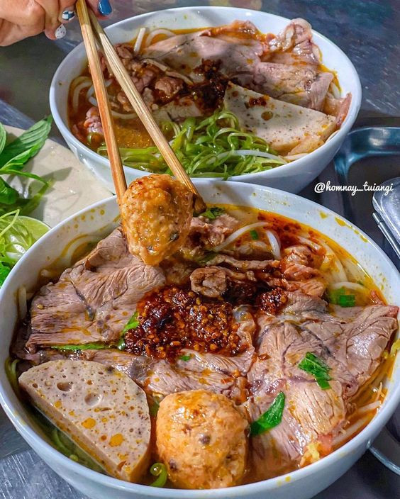
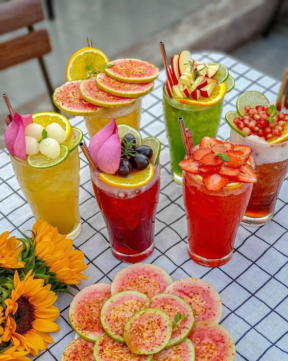
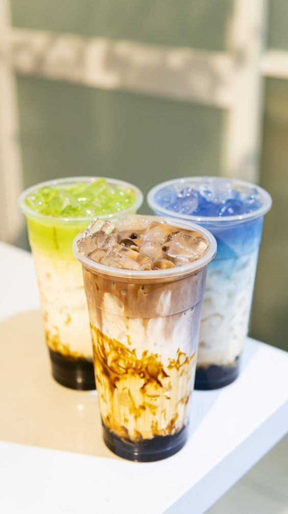

OurGallary

Cơm Gà
Đây chỉ là hình ảnh mang tính chất minh họa

Cơm Sườn
Đây chỉ là hình ảnh mang tính chất minh họa

Bún Bò
Đây chỉ là hình ảnh mang tính chất minh họa

Bún Riêu
Đây chỉ là hình ảnh mang tính chất minh họa

Trà Trái Cây
Đây chỉ là hình ảnh mang tính chất minh họa

Trà Sữa
Đây chỉ là hình ảnh mang tính chất minh họa